Тропы чтения
Материалов на сайте уже слишком много, чтобы просто листать список. Здесь — маршруты: в каждом пять-семь текстов в заданном порядке, и между ними сказано, почему дальше читать именно это.
Маршруты пересекаются — некоторые тексты входят в два и три сразу, и это нормально: один и тот же материал по-разному читается в разном соседстве.
С чего начать
Шесть материалов, дающих представление о том, чем этот сайт занимается и по каким правилам говорит. Порядок не по важности, а по нарастанию: от общего утверждения к способу его проверять.
Начать логично с текста, который задаёт всё остальное: почему главный вопрос экологии — это вопрос об истине, а не о том, кто больше беспокоится.
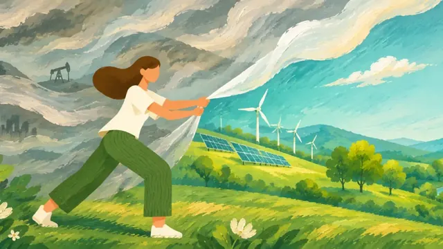
Теперь то же самое, но на предмете, который лежит у вас в ящике. Самый дешёвый способ понять метод сайта — посмотреть, как он применяется к вещи весом двадцать три грамма.
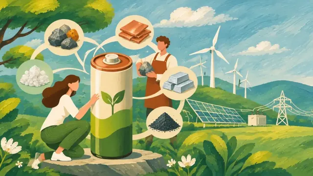
Дальше нужен масштаб. Здесь появляется рамка, в которой держится большая часть остальных разговоров, — и сразу же возражения против неё.

Прежде чем читать дальше, стоит узнать, что на этом сайте есть рубрика, разбирающая ошибки собственной стороны. Без неё всё предыдущее было бы проповедью.
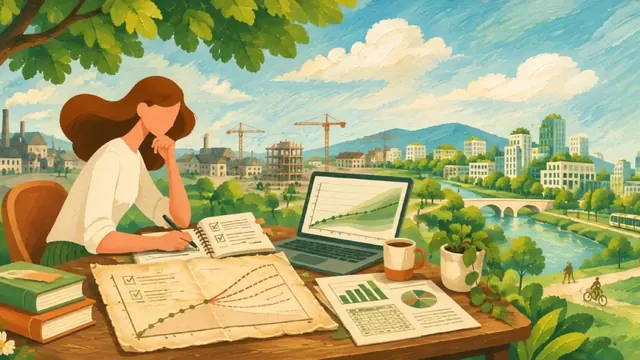
Возвращение к личному масштабу: шесть вопросов, на которые почти никто не отвечает, и честное объяснение, почему одного места всё-таки мало.

И напоследок — правила, по которым всё это написано, включая признание слабого места самого метода.
Инструменты и зависимость
Сквозная линия Ивана Иллича, растянутая по сайту от философского понятия до законов о запасных частях. Пожалуй, самый связный сюжет из всех, что здесь есть.
Сначала понятие целиком: откуда взялось, против чего сформулировано и почему у него нет порога — самое серьёзное возражение названо сразу.

Теперь то же в разговоре. Иллич встречает разработчика социальной сети, и радикальная монополия оказывается описанием вполне современной вещи.
От диалога к юриспруденции: спор о том, кому принадлежит вещь после покупки, и почему «чинить, а не выбрасывать» — плохое правило.

Мягкая версия той же схемы. Устройство, спроектированное так, чтобы избавить вас от необходимости думать, заодно лишает и выбора.
И крайний случай: вещь, чья невидимость не побочный эффект, а продукт.

Финал — спор, в котором Илличу возражают всерьёз и он не может ответить. Выясняется, что монополия возникает не из материала и не из патента.

Место как учебник
Маршрут о территории: сначала как об источнике знания, потом как о единственной точке отсчёта, потом как об аргументе. Заканчивается тремя местами, где эта мысль проверялась на практике.
Гэри Снайдер и шесть вопросов, на которые вы, скорее всего, не ответите. И возражение Урсулы Хайзе, которое портит всё удовольствие.
Почему утрата, происходящая медленнее одного поколения, не воспринимается как утрата. Одна страница Полая 1995 года объясняет больше, чем библиотека.
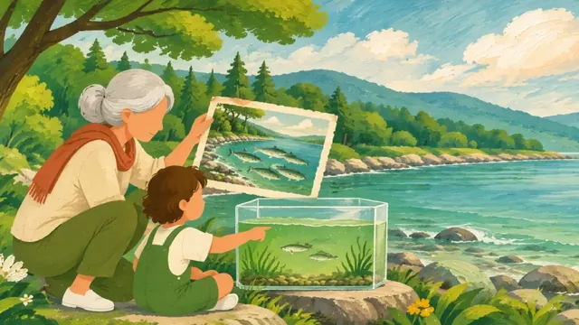
Отсюда прямо следует идея Кожевникова: участок, изъятый не для людей, а от людей. Единственный природоохранный институт, не предъявляющий счёта.

Первая проверка. Ландшафт, разрушенный до движущейся пустыни и возвращённый к лесу за полтора столетия ручной работы. Восстановление работает — и не заканчивается никогда.
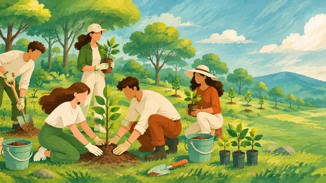
Вторая. Два места, где сравниваются плановая катастрофа и случайный заповедник, — и вывод, который из каждого по отдельности не следует.
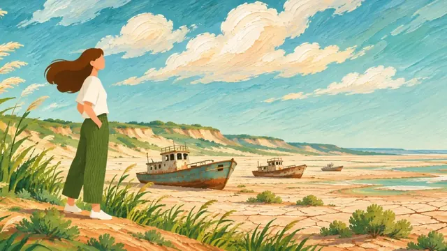
Третья, и она достраивает предыдущую: что происходит, когда люди остаются, а поток вещества останавливают.
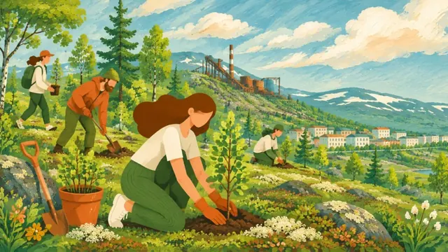
И под конец — про то, как выглядит внимание к месту, если вы туда приехали ненадолго.

Как считать
Маршрут об измерении. Каждый следующий текст показывает новый способ, которым показатель расходится с явлением. Заканчивается тем, что измерить нельзя в принципе.
Начало — с прибора, который восемьдесят лет вешают на место компаса. ВВП честно показывает скорость и ничего не говорит о направлении.
Дальше — самое цитируемое число климатического разговора и порядок его появления, обратный привычному: сначала требование, потом обязательство, потом наука.
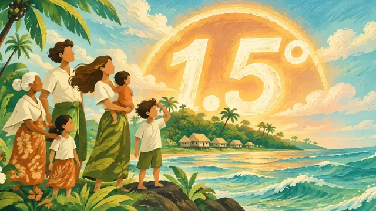
Здесь видно, что бывает, когда число переживает собственного автора: ООН заменила эту оценку, а она продолжает ходить по презентациям.
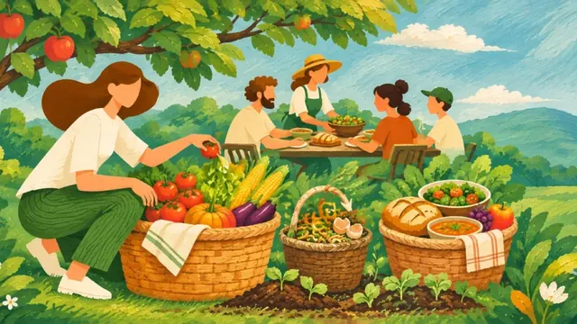
Величина, которая переставляет вопросы местами. Чем эффективнее здание, тем важнее становится, строить ли его вообще.

Теперь про то, что происходит, когда торгуют величиной, которую нельзя измерить, — и почему с диоксидом серы получилось, а с углеродом нет.
Следующий шаг той же логики: как только за показатель начинают вознаграждать, возникает индустрия по производству показателя в обход явления.

И предел всего маршрута: сущность, которая целиком не является нигде и потому не поддаётся ни одному прибору.

Где мы ошибались
Самая неудобная тропа на сайте. Пять разборов подряд, в которых разбирается не оппонент, а своя традиция, и завершение, где сайт берётся за собственные ошибки.
Сначала правила: пять способов оказаться неправым и обязательный противовес — предупреждения, не сбывшиеся потому, что сработали.
Классический случай неверного прогноза, с самой тяжёлой частью — тем, во что риторика перенаселения обошлась конкретным людям.
Здесь ошиблись обе стороны спора, причём зеркально: одни приписали книге предсказание, другие защищали его как пророчество.
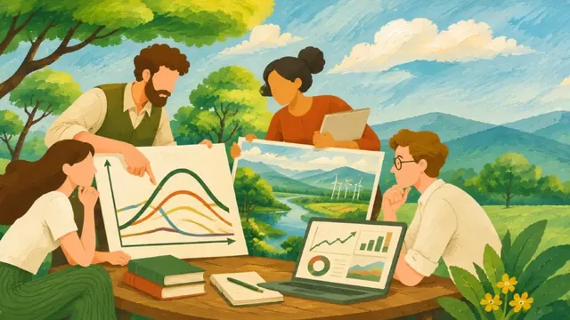
Самый неудобный разбор. Тревога была верной, ошибка была в сравнении: альтернативой оказался не отказ от станции, а уголь.
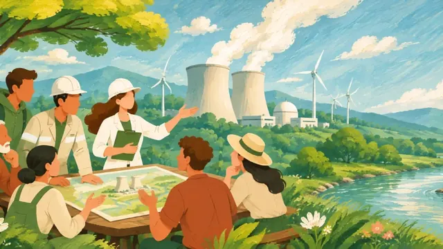
Случай, где ничего не провалилось, но локально верное утверждение распространили на планету — и Шри-Ланка получила счёт.

И финал, без которого всё предыдущее не стоило бы ничего: журнал ошибок самого сайта и перечень того, что здесь пока не проверено.
Если вы не согласны
Собрано специально для тех, кто считает экологическую повестку преувеличенной или идеологизированной. Здесь нет ни одного текста, написанного для того, чтобы вас переубедить, — только те, где сайт спорит сам с собой и проигрывает.
Начать стоит с прямого признания: движение десятилетиями воевало не с тем противником, и это стоило вполне исчисляемых жизней.
Дальше — спор, в котором обеим сторонам предъявляют их цену, и выясняется, что по двум решениям из трёх они сходятся за четыре минуты.

Здесь модную философскую конструкцию разбирают по существу, включая довод Мальма о том, что она удобна тем, кому выгодно, чтобы виноватых не нашли.
Аргумент о привязанности к месту вместе с его тёмной стороной: локализм легко становится исключающим, а укоренённость — имущественным тестом.
Разбор того, как хорошая практика превращается в завышенное притязание, написанный без всякой снисходительности к своим.
И правила, по которым всё это устроено, — с признанием, что метод превращается в формулу, а сайт остаётся компиляцией, а не источником.
Русская линия
Четверо мыслителей и три места. Ни один из этих сюжетов не является местным колоритом: каждый ставит вопрос, который в западной традиции либо был поставлен позже, либо не поставлен вовсе.
Человек, поехавший в Сибирь проверять Дарвина и вернувшийся с результатом, которого не ожидал. Плюс объяснение, почему география наблюдателя определила теорию.

Дальше — тот, кто превратил «биосферу» из места обитания жизни в утверждение о геологической силе. И то, почему вторая половина его мысли не подтвердилась.

Проверка этой второй половины, проведённая в той же стране через полвека после её формулировки. Результат отрицательный.
Идея 1908 года, философски более радикальная, чем всё, что предлагала природоохрана XX века, — и дважды разгромленная именно за это.
Место, где эта идея проверяется наоборот: не изъятие человека, а остановка потока при сохранении присутствия.
И указатель имён, где эта линия видна целиком: Кропоткин, Докучаев, Вернадский и Кожевников идут в хронологии подряд.
Углерод: от листа до неба
Маршрут о том, как один элемент связывает дерево за окном, уголь в недрах и температуру планеты. Начинается с вещи, которую можно потрогать рукой, и заканчивается вопросом, кто и как считает углерод.
Начать стоит с самого осязаемого: почему двадцатитонный дуб почти целиком сделан из воздуха и что это говорит о лесах, огне и угле.
Теперь та же история в масштабе планеты: круговорот углерода на одной схеме и одна лишняя стрелка, которую добавил человек.
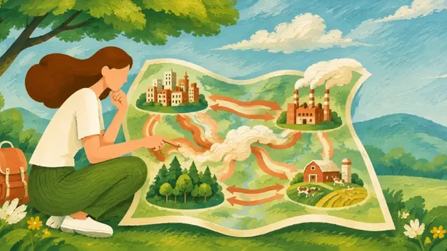
Как это увидели на самом деле: одна честная линия измерений, ежегодное «дыхание» северных лесов и неуклонный рост.
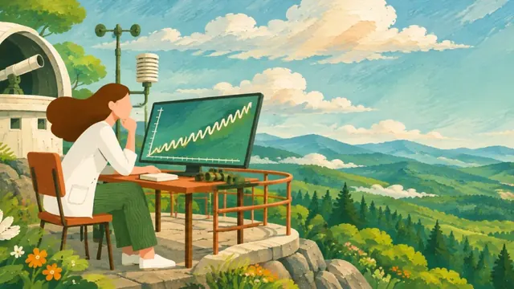
Откуда берётся лишний углерод: карта выбросов по секторам — и почему интуиция здесь часто ошибается.
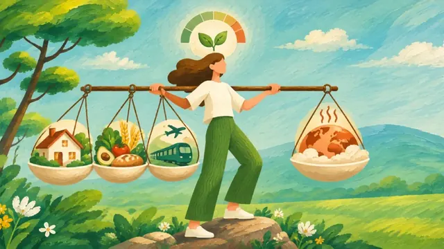
Самая большая строка этой карты — электричество. Что значит перестать выпускать в воздух древний лес из угольных пластов.
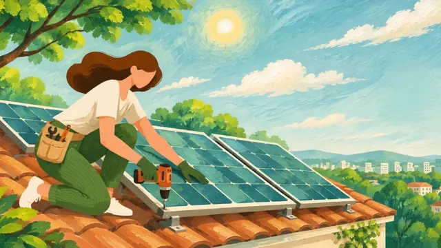
И под конец — что происходит, когда углерод пытаются сделать товаром, и почему посадки деревьев плохо работают как «компенсация».